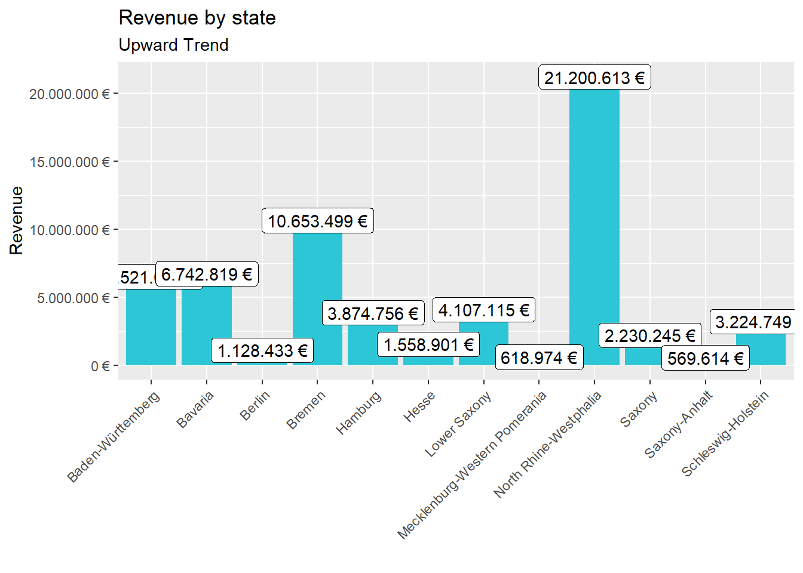
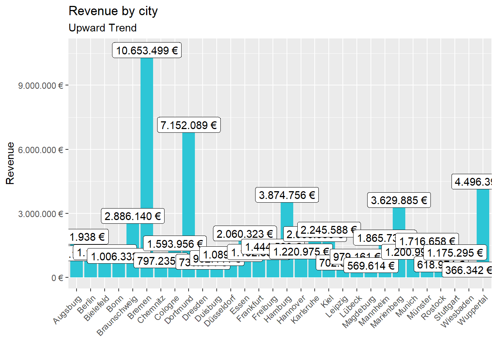
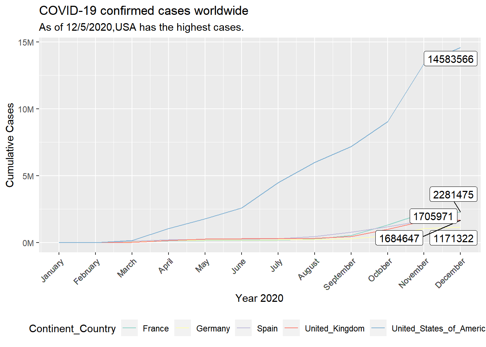
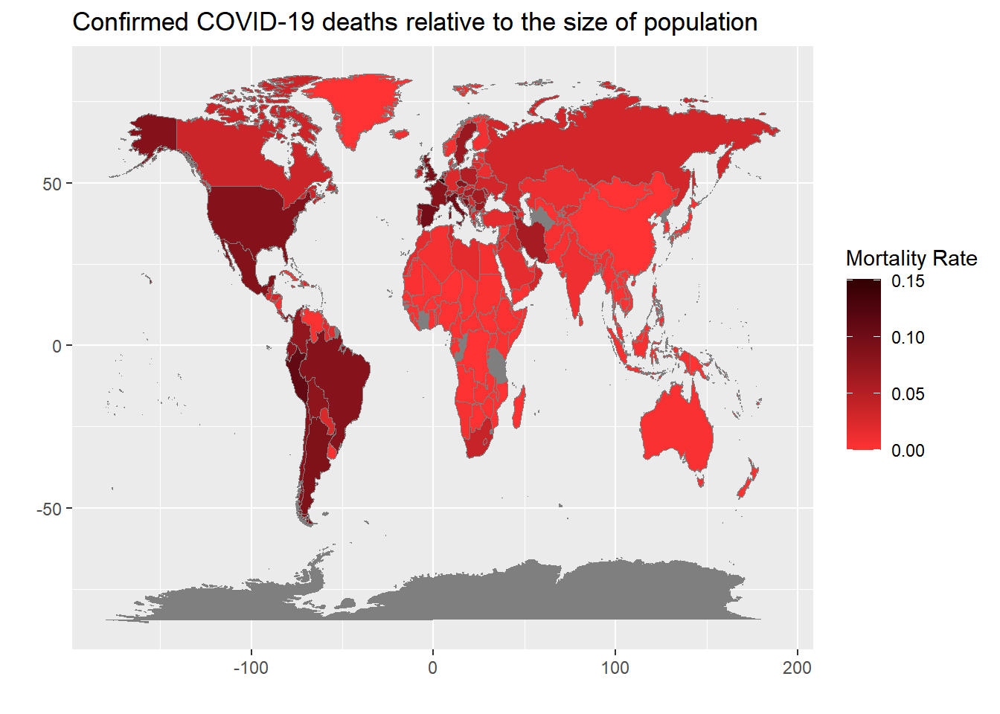
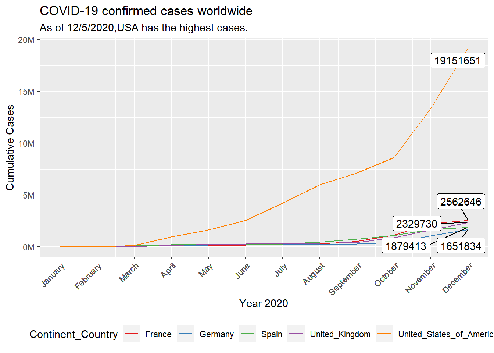

Journal (reproducible report)
Pradnil S Kamble
2020-11-28
IMPORTANT: You can delete everything in here and start fresh. You might want to start by not deleting anything above this line until you know what that stuff is doing.
This is an .Rmd file. It is plain text with special features. Any time you write just like this, it will be compiled to normal text in the website. If you put a # in front of your text, it will create a top level-header.
1 Assingment 1
Last compiled: 2020-12-06
Things to do:
- Analyze the sales by location (state) with a bar plot. Since state and city are multiple features (variables), they should be split. Which state has the highes revenue? Replace your bike_orderlines_wrangled_tbl object with the newly wrangled object (with the columns state and city).
2)Analyze the sales by location and year (facet_wrap). Because there are 12 states with bike stores, you should get 12 plots.
# Data Science at TUHH ------------------------------------------------------
# SALES ANALYSIS ----
# P1x
#libraries ----
library(tidyverse)
library(readxl)
library(lubridate)
library("writexl")
# Importing Files ----
bikes_tbl <- read_excel("bikes.xlsx")
orderlines_tbl <- read_excel("orderlines.xlsx")
bikeshops_tbl <- read_excel("bikeshops.xlsx")
# Examining Data ----
View(orderlines_tbl)
View(bikeshops_tbl)
View(bikes_tbl)
# Joining Data ----
bike_orderlines_joined_tbl <- orderlines_tbl %>% left_join(bikes_tbl, by = c("product.id" = "bike.id")) %>% left_join(bikeshops_tbl, by = c("customer.id" = "bikeshop.id"))
# Wrangling Data ----
bike_orderlines_wrangled_tbl <- bike_orderlines_joined_tbl %>% separate(col = location, into = c("city", "State"), sep = ",") %>%
mutate(total.price = price * quantity) %>% rename(bikeshop = name) %>% set_names(names(.) %>% str_replace_all("\\.", "_"))
# Business Insights ----
# Sales by State ----
# 1 - Manipulate
sales_by_state_tbl <- bike_orderlines_wrangled_tbl %>% select(State, total_price) %>% group_by(State) %>% summarize(sales = sum(total_price)) %>%
mutate(sales_text = scales::dollar(sales, big.mark = ".", decimal.mark = ",", prefix = "", suffix = " €"))
View(sales_by_state_tbl)
sales_by_city_tbl <- bike_orderlines_wrangled_tbl %>% select(city, total_price) %>% group_by(city) %>% summarize(sales = sum(total_price)) %>%
mutate(sales_text = scales::dollar(sales, big.mark = ".", decimal.mark = ",", prefix = "", suffix = " €"))
View(sales_by_city_tbl)
# 2 - Visualize
sales_by_state_tbl %>%
ggplot(aes(x = State, y = sales)) +
geom_col(fill = "#2DC6D6") +
geom_label(aes(label = sales_text)) +
geom_smooth(method = "lm", se = FALSE) +
scale_y_continuous(labels = scales::dollar_format(big.mark = ".", decimal.mark = ",", prefix = "", suffix = " €")) +
labs(title = "Revenue by state", subtitle = "Upward Trend", x = "", y = "Revenue")+
theme(axis.text.x = element_text(angle = 45, hjust = 1))
sales_by_city_tbl %>%
ggplot(aes(x = city, y = sales)) +
geom_col(fill = "#2DC6D6") +
geom_label(aes(label = sales_text)) +
geom_smooth(method = "lm", se = FALSE) +
scale_y_continuous(labels = scales::dollar_format(big.mark = ".", decimal.mark = ",", prefix = "", suffix = " €")) +
labs(title = "Revenue by city", subtitle = "Upward Trend", x = "", y = "Revenue")+
theme(axis.text.x = element_text(angle = 45, hjust = 1))
# Sales by Year and location ----
# 1 - Manipulate
sales_by_location_year_tbl <- bike_orderlines_wrangled_tbl %>% select(State, order_date, total_price) %>% mutate(year = year(order_date)) %>%
group_by(State ,year) %>% summarize(sales = sum(total_price)) %>% mutate(sales_text = scales::dollar(sales, big.mark = ".", decimal.mark = ",", prefix = "", suffix = " €"))
View(sales_by_location_year_tbl)
# 2 - Visualize
sales_by_location_year_tbl %>%
ggplot(aes(x = year, y = sales)) +
geom_col(fill = "#2DC6D6") +
geom_label(aes(label = sales_text)) +
geom_smooth(method = "lm", se = FALSE) +
scale_y_continuous(labels = scales::dollar_format(big.mark = ".", decimal.mark = ",", prefix = "", suffix = " €")) +
labs(title = "Revenue by state and year", subtitle = "Upward Trend", x = "", y = "Revenue")+
theme(axis.text.x = element_text(angle = 45, hjust = 1))+
facet_wrap(vars(State))
2 Assignment 2
library(tidyverse)
library(rvest)
library(xopen)
library(jsonlite)
library(glue)
library(stringi)
url_home <- "https://www.radon-bikes.de/"
xopen(url_home) ## Running cmd /c start "\"\"" /b "https://www.radon-bikes.de/"html_home <- read_html(url_home)
list_of_product_types <- html_home%>%
html_nodes(css = ".megamenu__item > a")%>%
html_text()
list_of_products_url <- html_home %>%
html_nodes(".megamenu__item > a") %>%
html_attr("href") %>%
enframe(name = NULL, value = "url") %>%
mutate(url = str_glue("https://www.radon-bikes.de{url}"))
bike_category_url <- list_of_products_url$url[1]
xopen(bike_category_url)## Running cmd /c start "\"\"" /b \
## "https://www.radon-bikes.de/mountainbike/hardtail/"html_bike_category <- read_html(bike_category_url)
temp_url <- html_bike_category%>%
html_node(".a-button--hollow-secondary")%>%
html_attr("href")%>%
enframe(name = NULL, value = "url") %>%
mutate(url = str_glue("https://www.radon-bikes.de{url}"))
temp_url <- temp_url$url[1]
xopen(temp_url)## Running cmd /c start "\"\"" /b \
## "https://www.radon-bikes.de/mountainbike/hardtail/bikegrid/"bike_category_grid_html <- read_html(temp_url)
list_of_product_names <- bike_category_grid_html%>%
html_nodes(css=".m-bikegrid__info > a > div > h4")%>%
html_text%>%
stringr::str_replace_all(pattern = "\n","")%>%
stringr::str_replace_all(pattern = " ","")%>%
enframe(name = NULL, value = "NAME")
list_of_product_prices <- bike_category_grid_html%>%
html_nodes(css=".m-bikegrid__price--active")%>%
html_text()%>%
stringr::str_extract(pattern = "[0-9€]+")%>%
stringr::str_replace(pattern = "€","")%>%
as.numeric()%>%
enframe(name = NULL, value = "PRICE")
list_of_product_prices = na.omit(list_of_product_prices)3 Assignment 3
samples <- rnorm(100, mean=0, sd=1)
hist(samples)
4 Assignment 4
4.1 challenge 1
Goal: Map the time course of the cumulative Covid-19 cases! Your plot should look like this:
library(tidyverse)
library(data.table)
library(ggplot2)
library(ggrepel)
url <- "https://opendata.ecdc.europa.eu/covid19/casedistribution/csv"
covid_data_tbl <- fread(url)
class(covid_data_tbl)## [1] "data.table" "data.frame"colnames(covid_data_tbl)## [1] "dateRep"
## [2] "day"
## [3] "month"
## [4] "year"
## [5] "cases"
## [6] "deaths"
## [7] "countriesAndTerritories"
## [8] "geoId"
## [9] "countryterritoryCode"
## [10] "popData2019"
## [11] "continentExp"
## [12] "Cumulative_number_for_14_days_of_COVID-19_cases_per_100000"str(covid_data_tbl)## Classes 'data.table' and 'data.frame': 60196 obs. of 12 variables:
## $ dateRep : chr "06/12/2020" "05/12/2020" "04/12/2020" "03/12/2020" ...
## $ day : int 6 5 4 3 2 1 30 29 28 27 ...
## $ month : int 12 12 12 12 12 12 11 11 11 11 ...
## $ year : int 2020 2020 2020 2020 2020 2020 2020 2020 2020 2020 ...
## $ cases : int 234 235 119 202 400 272 0 228 214 0 ...
## $ deaths : int 10 18 5 19 48 11 0 11 15 0 ...
## $ countriesAndTerritories : chr "Afghanistan" "Afghanistan" "Afghanistan" "Afghanistan" ...
## $ geoId : chr "AF" "AF" "AF" "AF" ...
## $ countryterritoryCode : chr "AFG" "AFG" "AFG" "AFG" ...
## $ popData2019 : int 38041757 38041757 38041757 38041757 38041757 38041757 38041757 38041757 38041757 38041757 ...
## $ continentExp : chr "Asia" "Asia" "Asia" "Asia" ...
## $ Cumulative_number_for_14_days_of_COVID-19_cases_per_100000: num 7.33 7.12 7.11 7.54 7.01 ...
## - attr(*, ".internal.selfref")=<externalptr>#check the unique country present.
unique(covid_data_tbl$countriesAndTerritories)## [1] "Afghanistan"
## [2] "Albania"
## [3] "Algeria"
## [4] "Andorra"
## [5] "Angola"
## [6] "Anguilla"
## [7] "Antigua_and_Barbuda"
## [8] "Argentina"
## [9] "Armenia"
## [10] "Aruba"
## [11] "Australia"
## [12] "Austria"
## [13] "Azerbaijan"
## [14] "Bahamas"
## [15] "Bahrain"
## [16] "Bangladesh"
## [17] "Barbados"
## [18] "Belarus"
## [19] "Belgium"
## [20] "Belize"
## [21] "Benin"
## [22] "Bermuda"
## [23] "Bhutan"
## [24] "Bolivia"
## [25] "Bonaire, Saint Eustatius and Saba"
## [26] "Bosnia_and_Herzegovina"
## [27] "Botswana"
## [28] "Brazil"
## [29] "British_Virgin_Islands"
## [30] "Brunei_Darussalam"
## [31] "Bulgaria"
## [32] "Burkina_Faso"
## [33] "Burundi"
## [34] "Cambodia"
## [35] "Cameroon"
## [36] "Canada"
## [37] "Cape_Verde"
## [38] "Cases_on_an_international_conveyance_Japan"
## [39] "Cayman_Islands"
## [40] "Central_African_Republic"
## [41] "Chad"
## [42] "Chile"
## [43] "China"
## [44] "Colombia"
## [45] "Comoros"
## [46] "Congo"
## [47] "Costa_Rica"
## [48] "Cote_dIvoire"
## [49] "Croatia"
## [50] "Cuba"
## [51] "Curaçao"
## [52] "Cyprus"
## [53] "Czechia"
## [54] "Democratic_Republic_of_the_Congo"
## [55] "Denmark"
## [56] "Djibouti"
## [57] "Dominica"
## [58] "Dominican_Republic"
## [59] "Ecuador"
## [60] "Egypt"
## [61] "El_Salvador"
## [62] "Equatorial_Guinea"
## [63] "Eritrea"
## [64] "Estonia"
## [65] "Eswatini"
## [66] "Ethiopia"
## [67] "Falkland_Islands_(Malvinas)"
## [68] "Faroe_Islands"
## [69] "Fiji"
## [70] "Finland"
## [71] "France"
## [72] "French_Polynesia"
## [73] "Gabon"
## [74] "Gambia"
## [75] "Georgia"
## [76] "Germany"
## [77] "Ghana"
## [78] "Gibraltar"
## [79] "Greece"
## [80] "Greenland"
## [81] "Grenada"
## [82] "Guam"
## [83] "Guatemala"
## [84] "Guernsey"
## [85] "Guinea"
## [86] "Guinea_Bissau"
## [87] "Guyana"
## [88] "Haiti"
## [89] "Holy_See"
## [90] "Honduras"
## [91] "Hungary"
## [92] "Iceland"
## [93] "India"
## [94] "Indonesia"
## [95] "Iran"
## [96] "Iraq"
## [97] "Ireland"
## [98] "Isle_of_Man"
## [99] "Israel"
## [100] "Italy"
## [101] "Jamaica"
## [102] "Japan"
## [103] "Jersey"
## [104] "Jordan"
## [105] "Kazakhstan"
## [106] "Kenya"
## [107] "Kosovo"
## [108] "Kuwait"
## [109] "Kyrgyzstan"
## [110] "Laos"
## [111] "Latvia"
## [112] "Lebanon"
## [113] "Lesotho"
## [114] "Liberia"
## [115] "Libya"
## [116] "Liechtenstein"
## [117] "Lithuania"
## [118] "Luxembourg"
## [119] "Madagascar"
## [120] "Malawi"
## [121] "Malaysia"
## [122] "Maldives"
## [123] "Mali"
## [124] "Malta"
## [125] "Marshall_Islands"
## [126] "Mauritania"
## [127] "Mauritius"
## [128] "Mexico"
## [129] "Moldova"
## [130] "Monaco"
## [131] "Mongolia"
## [132] "Montenegro"
## [133] "Montserrat"
## [134] "Morocco"
## [135] "Mozambique"
## [136] "Myanmar"
## [137] "Namibia"
## [138] "Nepal"
## [139] "Netherlands"
## [140] "New_Caledonia"
## [141] "New_Zealand"
## [142] "Nicaragua"
## [143] "Niger"
## [144] "Nigeria"
## [145] "North_Macedonia"
## [146] "Northern_Mariana_Islands"
## [147] "Norway"
## [148] "Oman"
## [149] "Pakistan"
## [150] "Palestine"
## [151] "Panama"
## [152] "Papua_New_Guinea"
## [153] "Paraguay"
## [154] "Peru"
## [155] "Philippines"
## [156] "Poland"
## [157] "Portugal"
## [158] "Puerto_Rico"
## [159] "Qatar"
## [160] "Romania"
## [161] "Russia"
## [162] "Rwanda"
## [163] "Saint_Kitts_and_Nevis"
## [164] "Saint_Lucia"
## [165] "Saint_Vincent_and_the_Grenadines"
## [166] "San_Marino"
## [167] "Sao_Tome_and_Principe"
## [168] "Saudi_Arabia"
## [169] "Senegal"
## [170] "Serbia"
## [171] "Seychelles"
## [172] "Sierra_Leone"
## [173] "Singapore"
## [174] "Sint_Maarten"
## [175] "Slovakia"
## [176] "Slovenia"
## [177] "Solomon_Islands"
## [178] "Somalia"
## [179] "South_Africa"
## [180] "South_Korea"
## [181] "South_Sudan"
## [182] "Spain"
## [183] "Sri_Lanka"
## [184] "Sudan"
## [185] "Suriname"
## [186] "Sweden"
## [187] "Switzerland"
## [188] "Syria"
## [189] "Taiwan"
## [190] "Tajikistan"
## [191] "Thailand"
## [192] "Timor_Leste"
## [193] "Togo"
## [194] "Trinidad_and_Tobago"
## [195] "Tunisia"
## [196] "Turkey"
## [197] "Turks_and_Caicos_islands"
## [198] "Uganda"
## [199] "Ukraine"
## [200] "United_Arab_Emirates"
## [201] "United_Kingdom"
## [202] "United_Republic_of_Tanzania"
## [203] "United_States_of_America"
## [204] "United_States_Virgin_Islands"
## [205] "Uruguay"
## [206] "Uzbekistan"
## [207] "Vanuatu"
## [208] "Venezuela"
## [209] "Vietnam"
## [210] "Wallis_and_Futuna"
## [211] "Western_Sahara"
## [212] "Yemen"
## [213] "Zambia"
## [214] "Zimbabwe"#getting month name column
covid_data_tbl$month_name<-months(as.Date(covid_data_tbl$dateRep))
##rolling up data to month year country Level
covid_mon_yr_country_lvl <- covid_data_tbl %>%
dplyr::group_by(month,month_name,year,countriesAndTerritories,geoId,countryterritoryCode,continentExp) %>%
dplyr::summarise(cases = sum(cases, na.rm = T)) %>%
dplyr::ungroup()
##creating Cummulative Cases column
covid_mon_yr_country_lvl <- covid_mon_yr_country_lvl %>%
dplyr::arrange(countriesAndTerritories,year,month) %>%
dplyr::group_by(countriesAndTerritories) %>%
dplyr::mutate(cumulative_cases = cumsum(cases)) %>%
dplyr::ungroup()
##I am filtering only for those shown in the graph and for the year = 2020
covid_mon_yr_country_lvl_fil<- covid_mon_yr_country_lvl %>%
dplyr::filter(countriesAndTerritories %in% c("Germany","Spain","France","United_Kingdom","United_States_of_America")& year == 2020) %>%
dplyr::rename('Continent_Country' = countriesAndTerritories)
#Graph using ggploat
covid_mon_yr_country_lvl_fil %>%
mutate(label = if_else(month_name == "December",as.character(cumulative_cases),NA_character_)) %>%
ggplot(aes(x=month,y =cumulative_cases))+
geom_line(aes(color = Continent_Country))+
scale_colour_brewer(palette = "Set3")+
scale_x_continuous(breaks=covid_mon_yr_country_lvl_fil$month,labels = covid_mon_yr_country_lvl_fil$month_name)+
scale_y_continuous(labels = scales::dollar_format(scale = 1/1e6,
prefix = "",
suffix = "M"))+
labs(title = "COVID-19 confirmed cases worldwide",
subtitle = "As of 12/5/2020,USA has the highest cases.",
x = "Year 2020",
y= "Cumulative Cases"
)+
theme(legend.position = "bottom",
axis.text.x = element_text(angle=45,hjust = 1))+
geom_label_repel(aes(label=label),
nudge_x = 1,na.rm = TRUE)
4.2 challenge 2
Goal: Visualize the distribution of the mortality rate (deaths / population) with geom_map(). The necessary longitudinal and lateral data can be accessed with this function:
library(tidyverse)
library(data.table)
library(ggplot2)
library(ggrepel)
library(maps)
library(ggthemes)
library(mapproj)
url <- "https://opendata.ecdc.europa.eu/covid19/casedistribution/csv"
covid_data_tbl <- fread(url)
world <- map_data("world")
colnames((world))## [1] "long" "lat" "group" "order" "region" "subregion"covid_data_tbl$countriesAndTerritories <- str_replace_all(covid_data_tbl$countriesAndTerritories,"_"," ")
world_data<- covid_data_tbl %>%
dplyr::mutate(countriesAndTerritories = case_when(
countriesAndTerritories == "United Kingdom" ~ "UK",
countriesAndTerritories == "United States of America" ~ "USA",
countriesAndTerritories == "Czechia" ~ "Czech Republic",
TRUE ~ countriesAndTerritories
))
options(scipen = 999)
country_mortality_rate<- world_data %>%
dplyr::group_by(countriesAndTerritories) %>%
dplyr::summarise(deaths = sum(deaths, na.rm = T),
popData2019 = nth(popData2019,1)) %>%
dplyr::mutate(mortality_rate = round((deaths/popData2019)*100,3))
plot_data <- country_mortality_rate %>%
dplyr::right_join(world,by=c("countriesAndTerritories"="region"))
plot_data %>% ggplot()+
geom_map(map = world,aes(map_id = countriesAndTerritories,fill=mortality_rate),color = "#7f7f7f",size=0.25)+
scale_fill_gradient(low="#FF3333",high = "#330000",name="Mortality Rate")+
expand_limits(x= world$long,y=world$lat)+
labs(x="",y="",title="Confirmed COVID-19 deaths relative to the size of population")